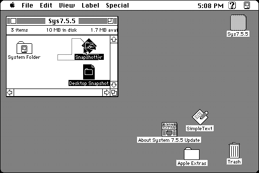

Download
Snapshotter1.0b5.zip (37K) Snapshotter 1.0b5 repackaged into a zipped hfs disk image and checksum file. The disk image can be mounted with Mini vMac.
Snapshotter1.0b5.sit.bin (33K) Snapshotter 1.0b5 in the original format.
copyright: Quinn “The Eskimo!”
mod date: Feb 11, 1998
license: freeware
from url :
Quinn’s Software Development
“Allows you to take a snapshot of a folder and, at a later date, restore the position of the icons within the folder from the snapshot.” Source code is included. Requires Scriptable Finder, “included with System 7.5 and higher”.
Only snapshots of the desktop seems to work for me in System 7.5.5, dragging in a disk or the folder doesn’t work. I suspect the “disk” and “fold” file types in the BNDL resource require a later system version. Using ResEdit to add the file type “****” to the BNDL resource allows the program to work as intended, though this means you can also drag in files it doesn't know how to deal with.

If you find these downloads useful, please consider helping the Gryphel Project, which hosts them.
Here are the md5 checksums for the downloads, signed with Gryphel Key 5:
--------- GRY SIGNED TEXT --------- e21058037af087b8551f25eb5fdbbe4a Snapshotter1.0b5.zip 28d719f07a93339c37ee06118ad0dc0e Snapshotter1.0b5.sit.bin ------- BEGIN GRY SIGNATURE ------- Gry/4Xa8CFcUzxdN/HT3QXlJrcyL8mDEQFZPSLUxiyWu0V5oL184I9H4mwcZHwHH RF8sb/ygQyK6tMzW6PYKxXD9JXMmvN/CCLcO0ksdXKomAdxeM+LNLjrbmEy3UG4S fASZwICkGjXbG98ACb64D10sN0aU9e7sZHiSDijiy8EwPrYdpy3Rm1jugidLuBpv -------- END GRY SIGNATURE --------